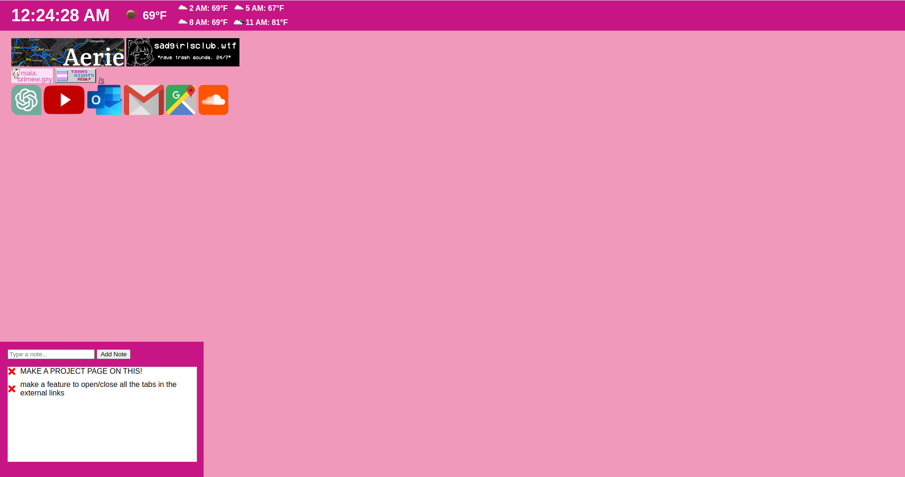

back to Index
A Homepage for my Computer June 6th
I got mad at the Brave browser for the last time a few weeks ago because every time i opened a new tab it would advertise some crypto stuff to me. I use brave because my school's online stuff doesn't like Firefox and it was the first chromium based one that advertised any type of privacy stuff. I've been losing layers of my paranoia as i transition so m didn't look to much into them. A few times when i would open my browser it would advertise some crypto thing to me. First it's built in homepage left a lot to be desired, then it would advertise an exchange or some NFT stuff and eventually i had enough and decided to just make my own alternative.
At first i decided to just do a collection of links to sites i visit a lot. I added them all quite easily to an HTML page and set it as my new tab page with Custom Newtab URL and left it at that, but then i realized that i was using some sites alot to do simple things that i could probably use an API to grab. so i started creating some scripts in JavaScript to add and format some other things onto the page. I had never used JavaScript before so i had to learn it really quickly, but once you know one programming language, you know most of them so it wasn't that hard. I added a clock and weather to the new tab and these are now features i use daily.
after using it for a while i realized i would write notes a lot in my book that i really needed localized on my computer. I would write things like features i want to add to the site and things i need to do the next day so next I added a notes feature to the lower section. I also added a feature using google's maps API that will tell me the traffic on the way to work so i know how much time i have in the morning but it's broken right now because of CORS. More features and updates to come!
Image as of June 6

original: june 6 2023
last updated: june 6 2023